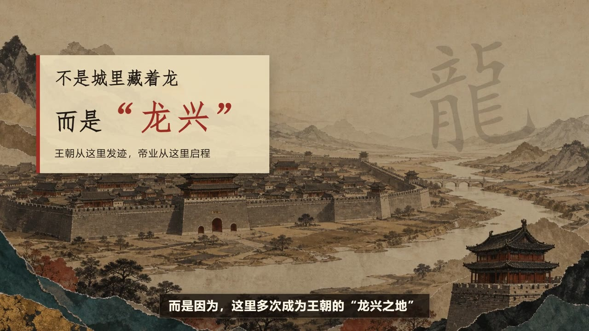

2026-07-17
约 13 分钟
日志
AI
技术
我的 AI 工作日志 #002：从故事到画面，拆解 3 个 DeepWhite 影视技能
详细梳理中文影视编剧、双语图像提示词和中文分镜三个技能：它们分别解决故事、视觉与镜头执行问题，并能串成一条完整 AI 影视生产线。
阅读全文My Journey
十年磨一剑，每一步都算数
从保险行业内勤主训到汽车集团运营管理，10年跨行业实战经验锻造了我从0到1的全流程能力。精通文案策划、数据整理分析、运营方案设计与落地执行，同时具备新媒体运营、视频剪辑、平面设计等多项硬技能。能够独立完成一个项目从构思到落地的全过程，是团队中不可或缺的多面手和问题解决者。
对技术有着近乎偏执的热情，自学计算机知识并成功搭建个人博客，掌握多种办公自动化工具，能够用技术手段大幅提升工作效率。紧跟AI技术发展浪潮，每日学习新知识、探索新工具，善于将前沿技术应用到实际工作中。坚信技术改变生活，学习永无止境，在快速变化的时代始终保持竞争力。
深度阅读爱好者，在书籍中汲取智慧，拓宽认知边界。相信每一本书都是一次与智者的对话。旅行与摄影发烧友，用脚步丈量世界，用镜头记录美好。在旅途中感受不同的文化与风景。虚拟世界探索者，通过互联网了解不一样的世界，发现更多可能性。
继续在自己热爱的领域深耕细作，不断提升专业能力，成为行业内的专家。保持终身学习的态度，拥抱变化，勇于尝试新事物，在不确定性中寻找确定性。通过这个博客平台，分享自己的知识与经验，认识更多志同道合的朋友，一起成长，共同进步。
Expertise
这些是我安身立命的根本，也是我不断前进的动力
精通各类文案写作，从策划到落地全流程把控，具备优秀的文字表达能力
精通Excel及各类数据工具，擅长数据整理、分析与可视化，用数据驱动决策
熟练掌握视频剪辑、平面设计技能，能够独立完成各类新媒体内容制作
自学编程与AI技术，擅长使用自动化工具提升效率，能够独立搭建个人网站
Writings
记录思考，分享感悟，这里有我随手写下的文字
详细梳理中文影视编剧、双语图像提示词和中文分镜三个技能：它们分别解决故事、视觉与镜头执行问题，并能串成一条完整 AI 影视生产线。
阅读全文
工作日志 · AI 01 AI · 成长
02
AI · 成长
02
从焦虑到从容，我总结了四条应对 AI 时代的策略：保持好奇心、深耕垂直领域、建立科学思维、善用 AI 工具。
阅读全文 成长
02
成长
02
总说三十而立，可站在31岁的门槛上，我才发现成长从来都不是一瞬间的事。内心深处总还住着那个18岁、眼神清亮的小男孩。
阅读全文 职场
03
职场
03
十年间辗转三个行业、四家公司，我最大的感悟是：真正决定职业天花板的，从来不是单一的专业技能，而是那些看不见的底层能力。
阅读全文 AI
04
AI
04
从2022年开始把AI融入日常工作，四年里总结出四个最实用的AI工作流。AI不会取代人类，但会使用AI的人，一定会取代那些不会使用AI的人。
阅读全文 成长
05
成长
05
学习方法论特别简单，就四个字：多看多学。兴趣是最好的驱动力，学习是一个从无到有的过程，复盘总结是从知识到认知的关键一步。
阅读全文 技术
06
技术
06
一个完全不懂编程的运营人员，如何从零开始亲手搭建个人博客？在AI时代，"不会写代码"早已不再是拥有个人网站的障碍。
阅读全文Contact
期待与志同道合的你交流学习